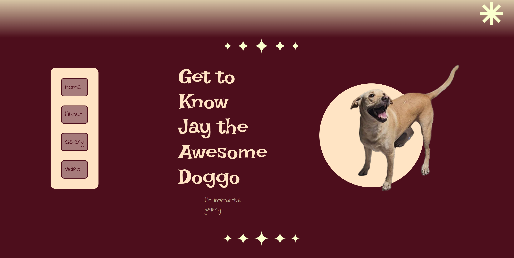
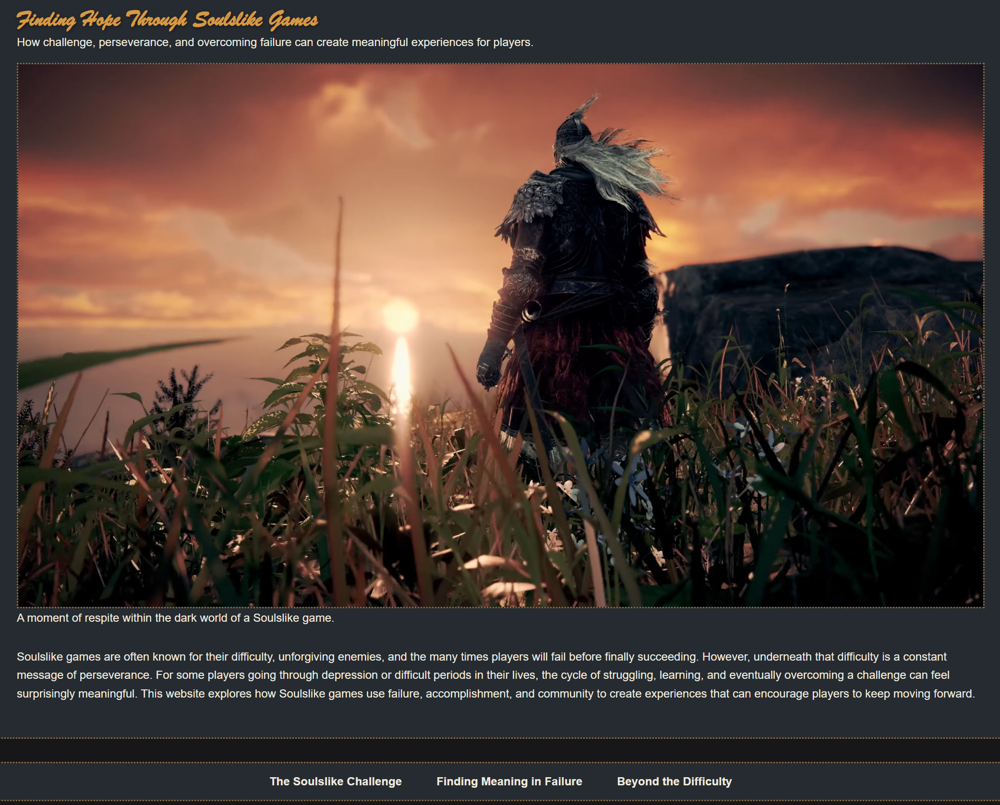
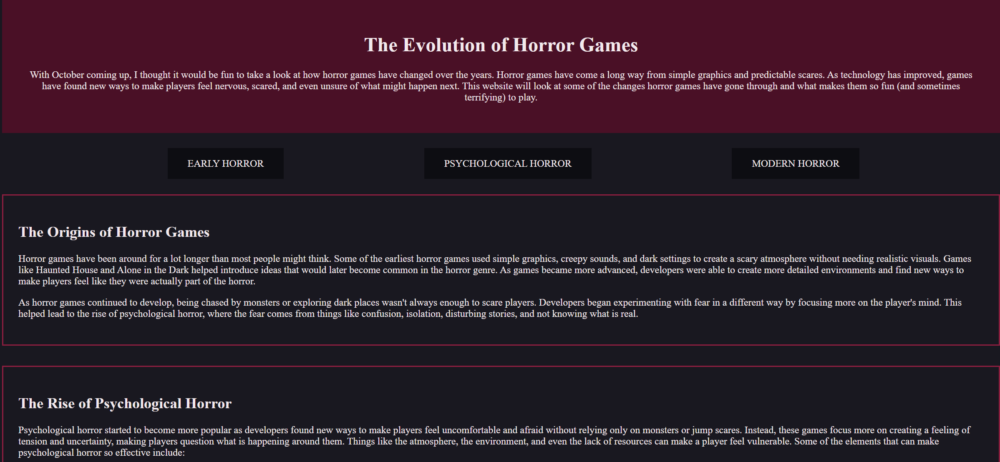
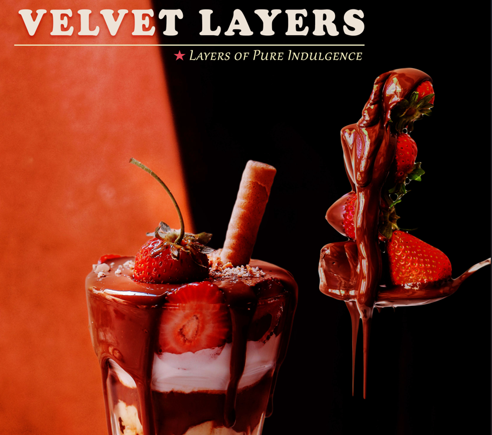
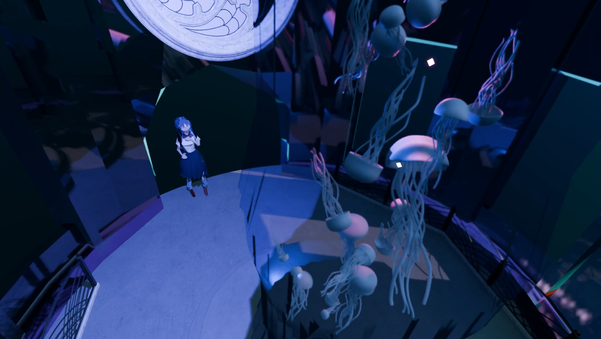

My Projects
Here are some of the projects I have created throughout my coursework. These projects have allowed me to practice and develop my skills in web development, digital design, interactive media as well as in creative problem solving.
Interactive Twine Game
This project is an interactive narrative game I created in Twine. I designed a branching story where player choices influence the direction of the narrative and ultimately influence the direction of the narrative that lead to different endings.
Skills: Twine, Interactive Storytelling, Game Design, Narrative Design, Narrative Design
Jay The Awesome Doggo

This project is an interactive website dedicated to my Labrador Retriever, Jay. I created the site to showcase his personality through an image gallery and other interactive content. This project allowed me to combine my web development skills with a subject that is personally meaningful to me.
Skills: HTML, CSS, Web Design, Interactive Media
Finding Hope Through Soulslike Games

This web development project examines how soulslike games can provide hope and resilience to players through their challenging yet rewarding gameplay mechanics. I designed the website around the dark fantasy atmosphere of Souls games while using visual elements to represent themes of hope, perseverance and overcoming failure.
This project helped me practice responsive web design, mobile-first development, Flexbox, Grid, and creating a consistent visual theme through typography and color.
Skills: HTML, CSS, Flexbox, CSS Grid, Responsive Web Design, Research, Writing, Game Analysis
The Evolution of Horror Games

This project explores the development of horror games, from early survival horror to psychological and modern horror experiences. I created the page using HTML and CSS to practice page structure, navigation, and visual styling.
Skills: HTML, CSS, Web Design
Digital Design Project | Chocolate Strawberry Parfait Promotional Advertisement

This project is a promotional advertisement I created in Adobe Photoshop for a chocolate strawberry parfait. I designed the composition to make the dessert visually appealing while creating a clear and engaging advertisement for the viewer.Through my design coursework, I have created digital artwork and compositions using Adobe Photoshop and Illustrator. these projects have helped me develop skills in typography, color, image editing, vector graphics, and visual composition.
Skills: Graphic Design, Photoshop, Adobe Creative Photoshop, Image Editing, Photo Compositing
Low-Poly Blender Animation

For this project, I created a low-poly 3D environment and animation using Blender. This project gave me experience working with 3D modeling, animation, composition, and creating a finished animated scene.
Skills: 3D Modeling, Animation, Blender, Digital Media
Watch the animation here